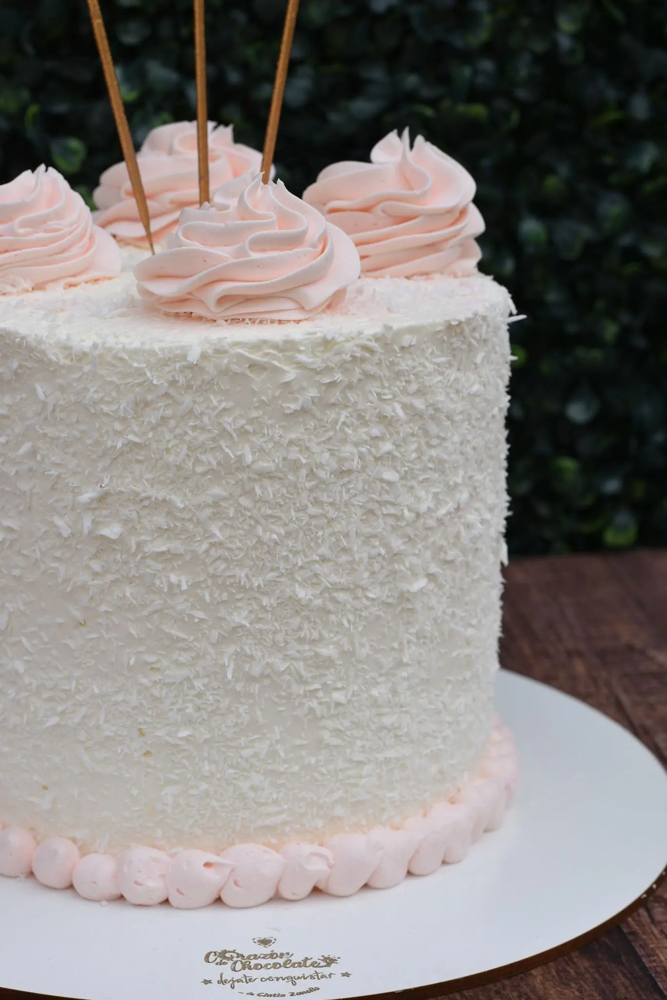
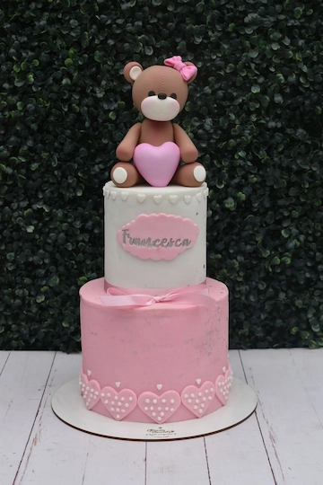
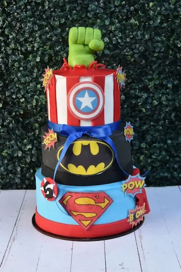
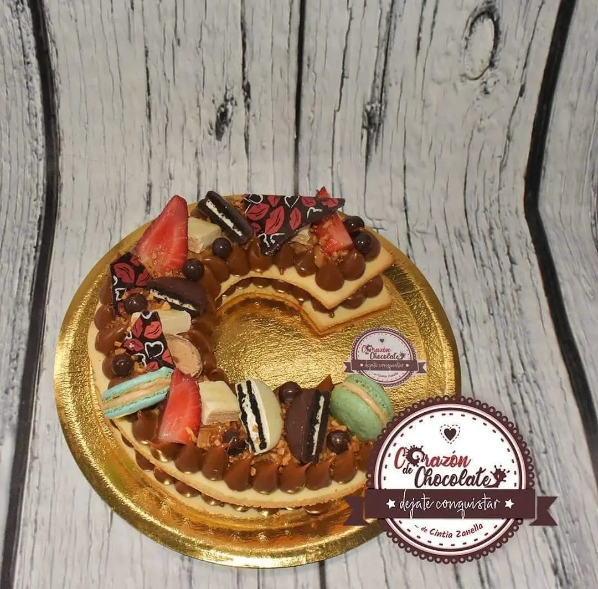
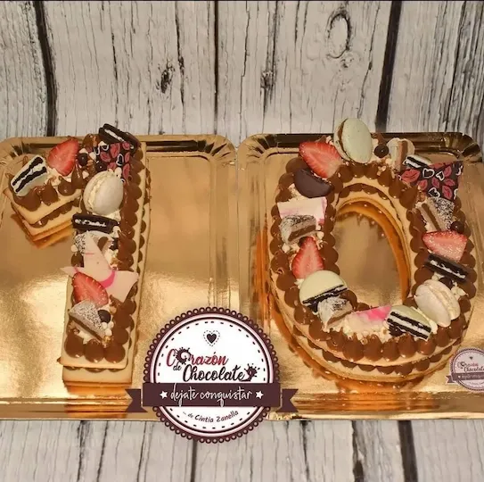

el equilibrio perfecto
entre lo exótico y lo tradicional
buttercream
cake

El tipo de crema suave y delicadamente dulce con el que recubro este tipo de tortas, está hecho a base de azúcar glass (también conocida como impalpable) y de manteca.
La uso, no sólo para la cobertura de las tortas más delicadas; sino también para los rellenos más ricos y golosos, y para la base adherente que se necesitan en los pasteles.
Principalmente la elaboro utilizando dos ingredientes básicos y super conocidos: Manteca y azúcar.
Otro elemento importante, aunque no vital, es la leche; que dota de cremosidad y suavidad a esta riquísima crema.
Tan simple como poderosa, porque nos permite diseñar y crear formas libres con la manga y añadir colorantes en su composición.
-
Buttercream Americano.
-
Buttercream Italiano o de Merengue Italiano.
-
Buttercream Suizo o de Merengue Suizo.

fondant
cake

Para preparar mi fondant artesanal utilizo agua, gelatina, glicerina, glucosa, manteca, azúcar impalpable y alguna esencia de sabor particular para que le de su retoque final de gran sabor.
El fondant es una especie de pasta, con textura similar a la plastilina, que utilizo en la elaboración de muchos de los dulces que suelen encargar para regalar y festejar.
La función principal del fondant es recubrir toda la superficie de las tortas; y decorar las mismas con formas, figuras y contornos. Es la base más conocida en el mundo de la pastelería. Suelo emplearla de forma super creativa en mis tortas, pasteles, cupcakes, galletitas, cakepops, muffins; entre otros..
La palabra “fondant” tiene su origen en el idioma francés y se utiliza para expresar o definir algo “que se funde”.
Posteriormente, fue adaptada al idioma inglés para hacer referencia a la elásticidad de esta masa comestible que hoy conocemos como fondant.
Agua y azúcar son sus principales ingredientes, que a su vez se suelen combinar con otros ingredientes como la glucosa, la manteca, la gelatina, los malavaviscos y, sobre todo, con la creatividad y el amor con el que hacemos las mejores decoraciones en la pastelería artesanal.
-
La gelatina en su preparación sirve de aglutinante y proporciona una textura gomosa.
-
La glucosa potencia su elasticidad y, a su vez, aporta propiedades anti-cristalizantes, para evitar que la cubierta se vuelva arenosa.
-
La manteca vegetal proporciona suavidad, además de ser un factor lubricante para que la masa no sea tan pegajosa en su manipulación.
-
El azúcar glas o azúcar pulverizada ayuda a formar la masa y darle el irresistible dulzor.

number
letter
